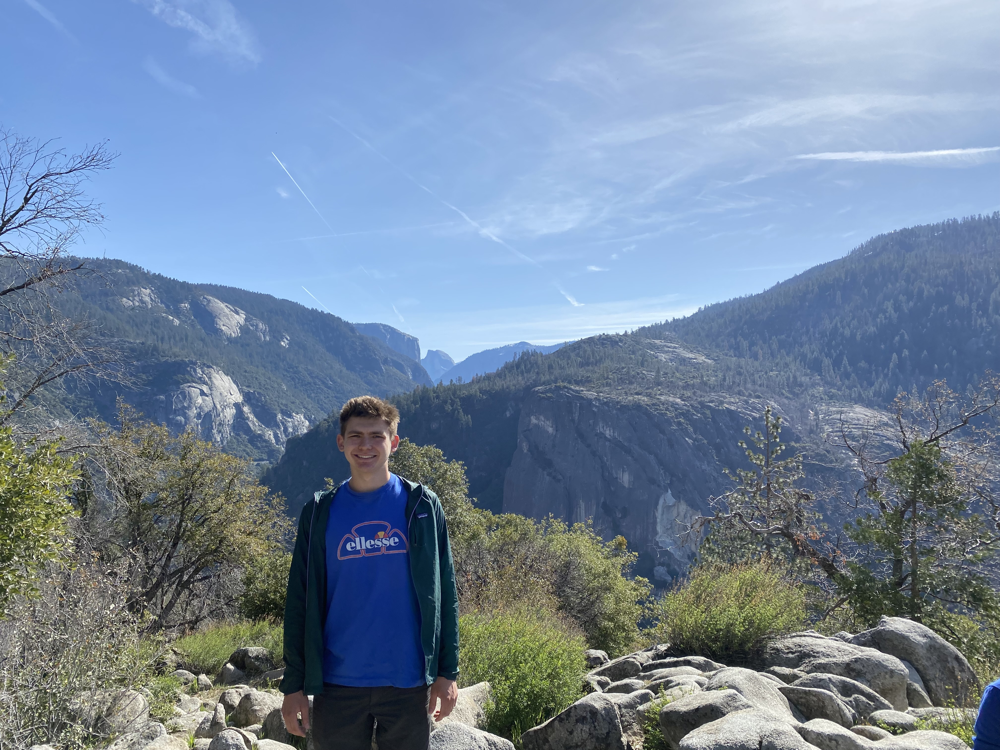

 I am currently an electrical engineering student at Stanford interested in semiconductor device physics, quantum computing, and neuromorphic computing. This summer, I am investigating the stability and degradation mechanisms of GaN transistors at MACOM. During the school year, I work at the Congreve Lab, performing experiments on perovskite LEDs to better understand their efficiency and stability. Previously, I designed optical systems at SLAC for MAGIS-100, an atom interferometry experiment designed to detect dark matter and gravitational waves. In the past, I created a website about predicting the outcome of sporting events using statistical modeling. Here is a basic summary of how the model works and what tools I used to create it.
This blog is just a series of book reviews for now, but I'm going to expand it with entries on topics and ideas I have been interested in recently. Stay tuned!
Review of Black Flags, Blue Waters By Eric Jay Dolin
January 13, 2022
Review of Birth of a Theorem By Cédric Villani
September 6, 2021
Review of Man's Search for Meaning By Viktor Frankl
July 6, 2021
Review of Why We Sleep By Matthew Walker
June 27, 2021
Review of Weapons of Math Destruction By Cathy O'Neil
June 22, 2021
Review of Superintelligence By Nick Bostrom
June 11, 2021
Review of Shackleton's Incredible Voyage By Alfred Lansing
June 1, 2021
Review of A Burning By Megha Majumdar
March 29, 2021